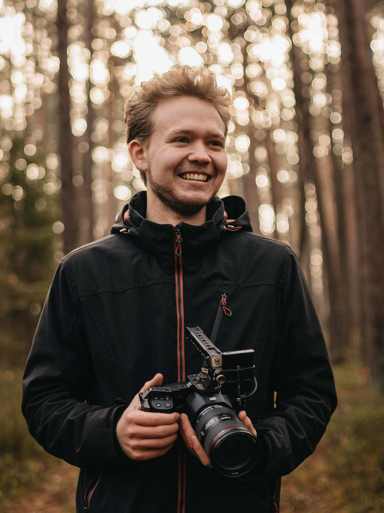
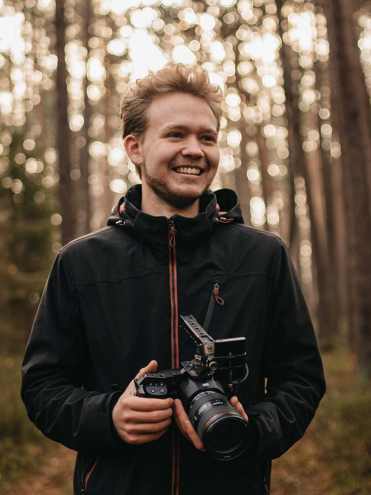
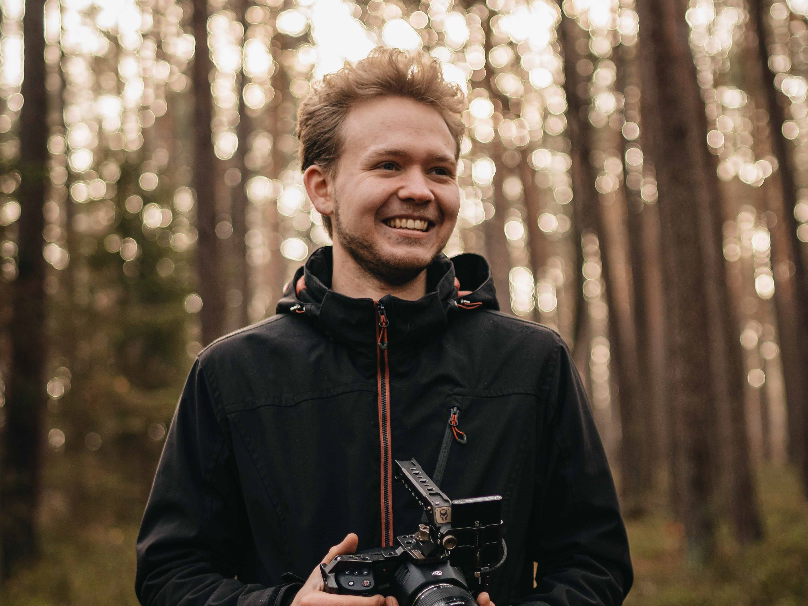
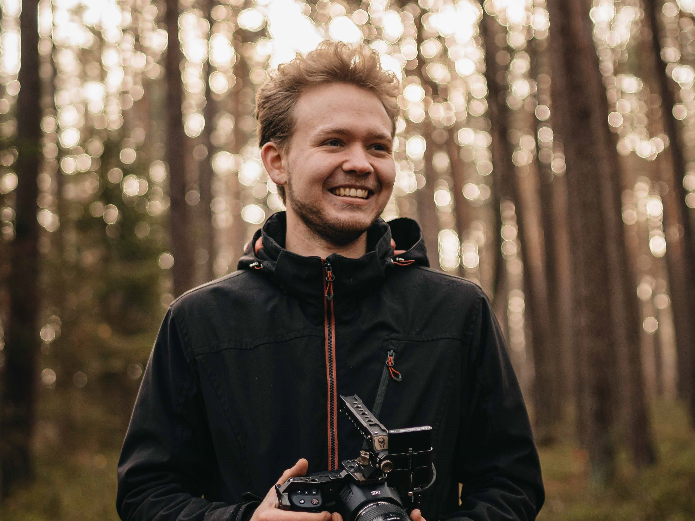

Dokumentation
Pullman City Quest
Sled Dog Racing in Germany
Dieses Schlittenhunderennen in der Westernstadt Pullman City im Oberharz ist wohl eines der stimmungsvollsten in Deutschland. Wir durften diese Veranstaltung im Rahmen unserer Projektarbeit im 3. Semester an der TH Nürnberg, Fakultät Design, filmisch begleiten und dokumentieren.


 



 
